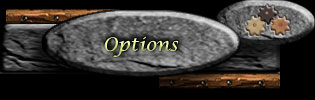

| 15 | 1 479 803 | 107 735 | 131 808 | 2 112 | 88 |

Voici les options de jeu à configurer.
| Gratuit | |
| Non-activé |
Il vous est possible de recommencer votre seigneurie à neuf en conservant vos informations de base ainsi que vos options privilège, oracle ainsi que votre noblesse. Une fois cette étape effectuée vous devez allez vous réinscrire dans la section réinscription de la page d'inscription. Il est important de toujours utiliser le même nom de login afin de pouvoir réinscrire votre seigneurie.
Cette opération vous permettera de recommencer vos choix de départ de votre seigneurie et vous recommencerez avec les acres et ressources d'une seigneurie de départ. Pour les 10 premiers jours hainyien de l'ère vous pourrez rester dans votre royaume actuel après ce délais vous vous retrouvez dans un royaume sélectionné au hasard.
Attention! Ce processus est irréversible et veuillez noter qu’il est impossible d’utiliser cette option si vous avez des troupes en attaque ou si votre royaume est en état de guerre.
| Mot de passe | |
| Confirmez |
Le mode vacances vous permet de verrouiller votre compte pour une période de temps. Durant cette période, vous ne pourrez pas accéder à votre compte pour une période minimale de 3 jours. Le temps minimal pour les vacances est de 3 jours (72 jours hainyens) et le temps maximal est de 25 jours (600 jours hainyens). Après la période que vous avez indiquée, votre compte sera réactivé automatiquement. Il est impossible de vous connectez au jeu avant la fin de la période de vacances choisie.
Votre seigneurie ne connaîtra aucune production et tous les événements générés avant la période de vacances seront gelés dans le temps. Aucune action ne pourra être menée contre vous. A votre retour, vous allez retrouver votre seigneurie comme vous l'aviez laissée. Cette option est utilisable une seule fois par ère. Veuillez noter qu'il est impossible d'activer le mode vacances si vous avez des troupes en attaque ou si votre royaume est en état de guerre.
| Jours de vacance (Jour normal) | |
| Mot de passe |
Vous pouvez quitter volontairement un clan. Vous aurez la possibilité de sélectionne le clan où vous désirez vous exoder, par contre vous ne pouvez pas changer de royaume. Vous avez la possibilité de faire un maximum de 5 exodes volontaires au cours de l'ère. Veuillez noter qu'il est impossible de quitter votre clan si vous avez des troupes en attaque ou si votre royaume est en état de guerre.
Exode(s) volontaire(s) disponible(s): 5
| Clan | |
| Mot de passe |
Vous n'êtes pas abonné à l'Oracle actuellement.